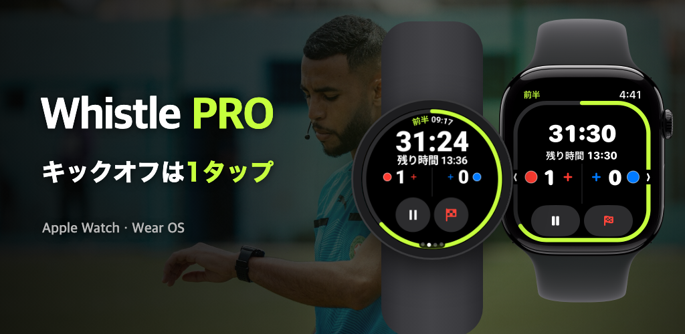

Whistle PRO
ウォッチを着けて、そのままピッチへ。
サッカー審判のための、Apple Watch・Wear OS用の試合タイマーと記録。
App Storeからダウンロード
Google Play 近日公開

ウォッチを着けて、そのままピッチへ。
サッカー審判のための、Apple Watch・Wear OS用の試合タイマーと記録。

草サッカー、クラブ、少年リーグまで。スマートフォンなしで、ウォッチひとつで試合全体を運営できます。
走りながら、ウォッチのボタンやクラウン・ベゼルで中断・再開、ゴール、取り消しができます（PRO）。Apple Watchと、Galaxy WatchなどのWear OSウォッチで。
前後半、クォーター制、延長戦、PK戦まで。中断時間を別に計り、目安のアディショナルタイムを表示します。
終了間際、ハーフタイム終了、一時的退場からの復帰のタイミングを手首の振動でお知らせします。
ゴール、警告、退場、交代をチームと背番号つきで記録します。2回目の警告は自動で退場になります。
FIFA標準をもとに、試合時間・人数・交代の上限・一時的退場まで変えて、プリセットとして保存できます。
心拍数、移動距離、スプリント、移動ヒートマップを試合記録とともに残し、ヘルスケア（iPhone）またはHealth Connect（Android）にワークアウトとして保存します。
試合が終わったら、得点・カード・交代と適用ルールをまとめた報告書をスマートフォンからすぐに共有できます。
試合詳細の［マップ］タブでピッチの四隅を合わせると、衛星写真の上に自分の移動ヒートマップが表示されます。
ピッチを合わせた試合は、自分の動きを15秒のリプレイ動画にして、SNSにすぐ投稿できます。
キックオフ前にウォッチで両チームのユニフォームの色を選び、試合後はスマートフォンでも直せます。
試合運営に欠かせない機能は無料、記録と分析はPROで。
サブスクリプション不要
月額または年額 · 7日間無料トライアル
サブスクリプションはスマートフォンのアプリで登録でき、App StoreまたはGoogle Playのアカウント設定でいつでも解約できます。
アカウントもサーバーもありません。試合記録と健康データは、ウォッチとスマートフォンの間だけでやり取りされます。
プライバシーポリシーを見る